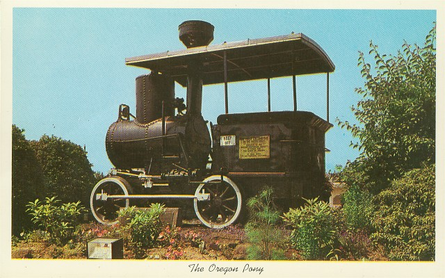

Last updated: 24 June, 2015
| Builder: | Vulcan Iron Works Foundry (San Francisco) |
| Build #: | |
| Date: | 1861 |
| Engine #: | |
| Railroad: | Oregon Portage Railway |
| Website: | www.cascadelocksmuseum.org, www.portofcascadelocks.gov |
| Email: | info@cascadelocksmuseum.org |
| Location: | Cascade Locks Marine Park, Cascade Locks Historical Museum, 417 SW Portage Rd Cascade Locks, OR 97014 |
| GPS: | 45.668378,-121.895375 |
| Phone: | 541-203-0881 |
| Status: | Display |
| Notes: | Named Oregon Pony. The "Oregon Pony," built in 1861 by the Vulcan Iron Works, is displayed in a small building at Marine Park. Originally built for the Oregon Portage Railway at Bonneville, OR, it was later sold in 1863 to the Cascades Railroad Co of Cascades, WA. Later owned by David Hewes of San Francisco, it was donated to the State of Oregon in 1904 and placed on display at Cascade Locks in 1970 |
| Class: | |
| Gauge: | 4'-8½" (60?) |
| F.M.Whyte: | 0-4-0T |
| Drivers: | 34 |
| Gear Ratio: | |
| Tractive Effort: | 810 |
| Weight: | 9,700 |
| Weight on Drivers: | 9,700 |
| Length: | |
| Boiler: | |
| Cylinders: | 6x12 |
| Top Speed: | |
| Horsepower: | |
| Fuel: | Wood |
| Fuel Type: | |
| Water: | |
| Steam psi: | 132 |